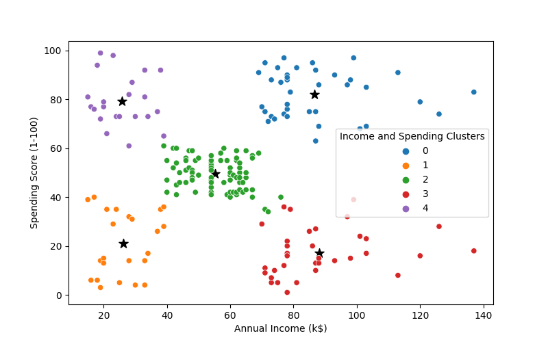

Applied K-Means and Hierarchical clustering to 10,000 customers, identifying 5 distinct high-value segments for targeted marketing
Tech: Python, Pandas, Scikit-learn, Clustering Algorithms

End-to-end machine learning system built with Python and Streamlit to predict customer churn with interactive visualizations.
Tech: Python, Streamlit, Machine Learning, Classification
Statistical Analysis Project

Statistical and exploratory tests with three hypothesis tests to validate patterns in healthcare data using R.
Tech: R, Statistical Analysis, Hypothesis Testing, Data Visualization
Predictive Modeling Project

Developed and implemented a stock price prediction model using historical data with 90% forecast accuracy.
Tech: Python, Time Series Analysis, Predictive Modeling